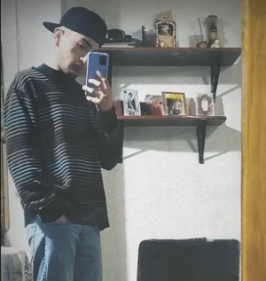

Nombre: Juan Cruz
Alias: "El Mono"
Delitos: Comer menores, insultar gordas, pegarle al marcos estando borracho, ser un fife
Estado: Soltero pero feliz
Detalles
- Edad: 16
- Altura: 1.74 m
- Peso: Pluma
- Instagram: Juan_lucz
- Descripción: Lo mejor de todo es que es un pibe súper divertido, siempre con una sonrisa y listo para hacerte reír con cualquier cosa. Cuando se pone a bailar, no hay quien lo pare, y si le pones trap, se prende al toque, ni hablar si le das alcohol. Si lo tenés como amigo, siempre sabés que vas a pasarla bien.
- Testimonio: "El Santi Come Pito"